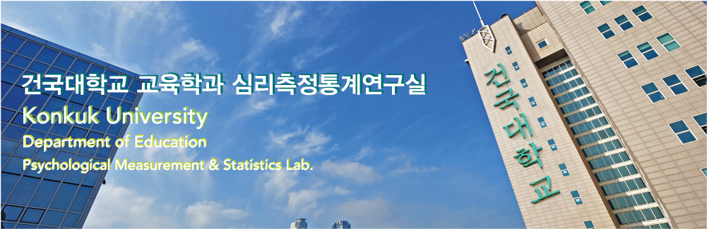
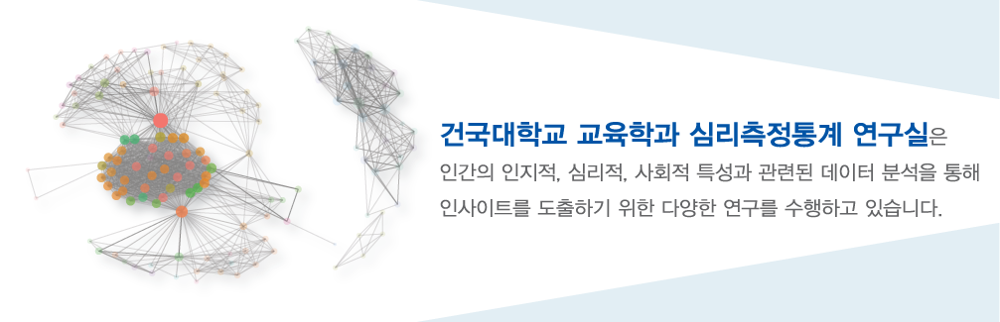

건국대학교 대학원 교육학과 심리측정통계 연구실
Konkuk University / Psychological Measurement & Statistics Lab.
Home
전공 소개
책임교수 소개
연구실 및 연구원 소개
 
건국대학교 대학원 교육학과 심리측정통계 연구실
은
인간의 인지적, 심리적, 사회적 특성과 관련된 데이터 분석을 통해
인사이트를 도출하기 위한 다양한 연구를 수행하고 있습니다.
관련 사이트
바로가기
건국대학교 일반대학원 교육학과 홈페이지
건국대학교 교육대학원 교육학과 교육데이터컨설팅전공 홈페이지